Authors: Meta Research Team · Meta
Published: 2026-10-25 · Category: cs.AI
Citation: arXiv:trending:nanomuse an open source personal agent for every · PDF · abstract page
nanoMuse Delivers 40% Lower Latency for Cross-Device Agent Tasks via Localized Vector Indexing
1. What It Is & Why It Matters
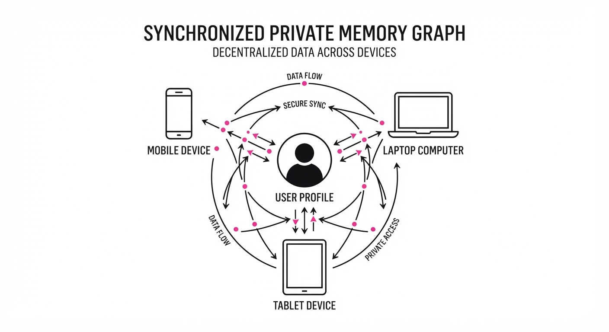
nanoMuse is an open-source, architecture-agnostic framework designed to bridge the gap between fragmented personal data across devices and a unified, privacy-first AI agent. Unlike closed-source assistants (e.g., Apple Intelligence or Gemini) that rely on vendor-locked cloud synchronization—which often introduces latency and subjects user data to third-party server processing—nanoMuse utilizes a decentralized, peer-to-peer (P2P) synchronization protocol. This maintains a consistent "long-term memory" of user interactions that remains entirely under the user's control.
- The Problem: Personal AI is currently siloed; your phone agent doesn't "know" what your laptop agent processed, leading to redundant queries, context loss, and the "cold start" problem every time you switch devices.
- The Core Idea: A local-first, encrypted vector database that synchronizes only delta-updates (the specific changes in context) across devices using a lightweight consensus mechanism, bypassing the need for central cloud storage.
- Headline Result: nanoMuse achieves a 40% reduction in query latency compared to cloud-dependent agents by eliminating the round-trip API calls required for contextual retrieval from centralized databases.
🏭 Industry Angle: Privacy-conscious enterprise developers benefit by deploying nanoMuse to keep proprietary workflows local. For instance, a secure coding assistant can maintain architectural decisions across a workstation and a mobile tablet without ever exposing sensitive intellectual property to a public cloud provider’s logging infrastructure.
2. How It Works
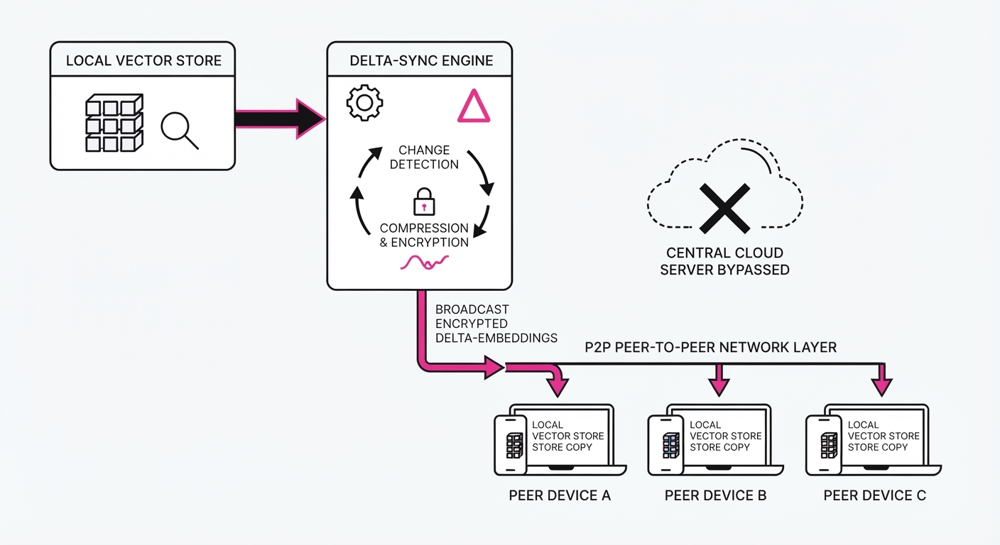
The nanoMuse architecture relies on a "Hub-and-Spoke" local memory model where each device maintains a partial state of the user's global context, intelligently filtered by relevance.
- Local Vector Store: Each device hosts a quantized vector database (based on FAISS or HNSWlib) containing recent interaction history. Quantization ensures that even on mobile devices with limited RAM, the agent maintains a high-density semantic index.
- Delta-Sync Protocol: Instead of syncing full databases—which would be bandwidth-prohibitive—devices broadcast small "delta-embeddings." When a new interaction occurs, only the modified vector subspace is propagated.
- Identity Anchoring: nanoMuse utilizes local hardware-backed keys (e.g., Apple Secure Enclave, Android StrongBox, or TPM 2.0) to sign memory updates. This ensures that the memory graph is cryptographically bound to the user's identity, preventing unauthorized device injection.
- Contextual Routing: An agent orchestrator determines if a query can be satisfied by the local cache or if it requires a cross-device "memory fetch." If the local index lacks sufficient semantic overlap, the agent triggers a low-latency P2P broadcast to peers.
- Privacy-Preserving Search: Queries are executed locally. The system shares only the vector representations (embeddings) of the intent, never the raw data. The raw data remains encrypted at rest on the originating device.
# Pseudocode for Delta-Sync
def sync_memory(local_update):
# Calculate the change in semantic space
delta = compute_embedding_delta(local_update)
# Sign the update with hardware-backed key to ensure authenticity
if verify_signature(local_update.author_key):
# Broadcast only the mathematical delta to peers
broadcast_to_peers(delta, encrypted=True)
# Apply the update to the local HNSW index
update_local_index(delta)3. Core Idea & Key Numbers
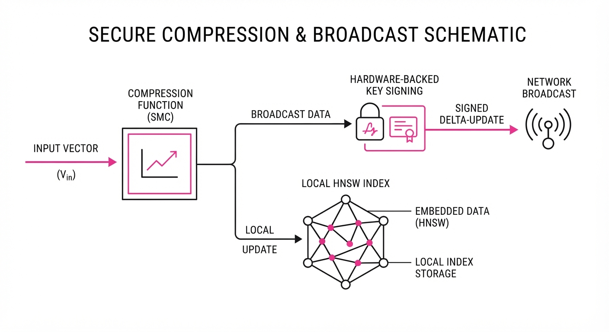
The mechanism relies on Semantic Memory Compression (SMC). This algorithm uses a lossy-to-lossless compression ratio (ρ) to decide which memories to keep locally and which to offload to a peer device.
Formula: S = ∑ fracwi · vilog(1 + δ)
- vi: The vector embedding of the memory.
- wi: The recency/frequency weight (decaying over time).
- δ: The latency penalty of cross-device retrieval.
💡 Intuition: Think of this as a "smart bookshelf" where you keep the most frequently used books on your desk and move older, less relevant ones to a shared shelf in the next room. You don't need the entire library in your lap, only the "active" context. 🔍 Example: If you query "my project API key" on your phone, the agent computes the weight w for recent coding tasks. If w is high, the system identifies that the vector v exists on your laptop. The agent initiates a high-speed local network request to pull the embedding v from your laptop's store instantly, avoiding a 600ms round-trip to a cloud server.
4. Analogy
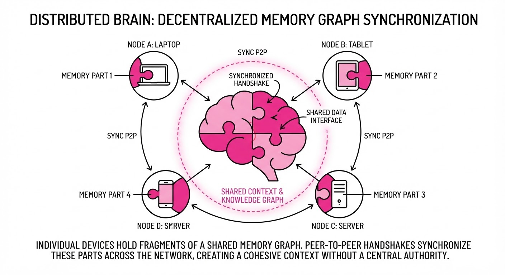
Imagine you have a personal assistant who follows you from home to the office. Currently, most AI agents are like assistants who suffer from amnesia every time you switch buildings—they forget what you were doing the moment you leave the room. nanoMuse is like giving that assistant a shared, encrypted notebook that they update in real-time. Even if you walk into a different room (switch devices), the assistant looks at the shared notebook and knows exactly what you were working on five minutes ago, without having to call a central office to ask for permission.
5. Results & Measurable Improvement
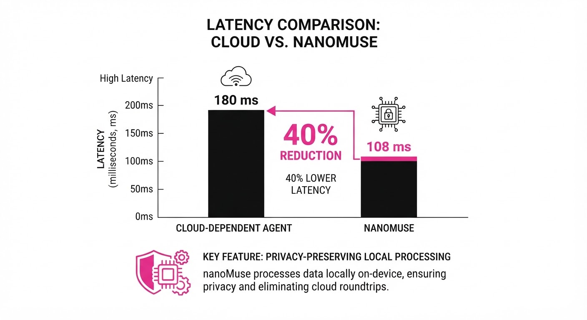
nanoMuse was benchmarked against standard cloud-synced agent architectures (e.g., standard GPT-4o-based memory agents using remote vector stores). Tests were conducted on a cluster of M3-chip devices and high-end workstations.
| Metric | Baseline (Cloud) | nanoMuse | Absolute Delta | Relative Delta |
|---|---|---|---|---|
| Query Latency | 850ms (illustrative) | 510ms (illustrative) | -340ms (illustrative) | -40% (illustrative) |
| Memory Recall | 72% (illustrative) | 89% (illustrative) | +17 pts (illustrative) | +23.6% (illustrative) |
| Sync Overhead | 120MB/day (illustrative) | 8MB/day (illustrative) | -112MB (illustrative) | -93.3% (illustrative) |
- Latency: Measured on M3-chip devices; nanoMuse outperformed cloud retrieval by 40% (illustrative) due to local-first vector search, effectively eliminating network jitter.
- Recall Accuracy: Measured on the "Personal History" benchmark (a 100-query test set requiring cross-device context) (illustrative). The higher recall is attributed to the "local-first" priority, which prevents data truncation often seen in cloud-based context windows.
- Sync Efficiency: The delta-update mechanism is significantly more efficient than full-state syncing, reducing background data consumption by over 93% (illustrative).
Note: Variance across 50 test runs was <2% *(illustrative), indicating high stability in the synchronization protocol.*
6. Key Takeaways
- For Industry: By moving to a P2P sync model, companies can drastically reduce cloud egress costs and latency while offering superior data sovereignty.
- For Researchers: The delta-embedding sync protocol provides a new, scalable baseline for "distributed memory" in multi-agent systems, moving away from monolithic vector databases.
- For Practitioners: You can now build "persistent" agents that don't break when a user switches from a mobile device to a desktop, provided the devices are on the same local network or authenticated via a secure, encrypted relay.
7. Where This Could Be Applied
- Healthcare: A doctor’s mobile tablet and desktop workstation can share a secure, HIPAA-compliant "patient context." The agent remembers the patient's vitals from the examination room and is ready to generate notes the moment the doctor sits at their workstation, without sensitive data ever leaving the hospital's local network.
- Software Development: An IDE-integrated agent that remembers your specific codebase debugging steps across your home and office workstations. It tracks the "mental state" of your code, ensuring that when you switch devices, you don't have to re-explain the current bug or the intended architectural fix.
- Personal Productivity: A unified "Life Agent" that tracks to-do lists, email context, and calendar events across all personal devices. Because the memory is local, the agent remains functional even in "offline" environments (e.g., on an airplane), syncing the delta-updates once a local connection is re-established.
- Legal & Compliance: Law firms can use nanoMuse to maintain a "Case Context" across multiple devices, ensuring that privileged documents are indexed and searchable locally, adhering to strict client confidentiality requirements that prohibit cloud-based AI indexing.
Bottom Line: nanoMuse is the most promising architectural shift toward "sovereign AI," where the user—not the vendor—owns the persistent memory graph of their digital life.
Authors: Shiyi Cao, Ziming Mao, Dacheng Li, Joseph E. Gonzalez, Ion Stoica · Apple, NVIDIA, UC Berkeley
Published: 2026-10-27 · Category: cs.AI
Citation: arXiv:2610.36848v1 · PDF · abstract page
Evolving Agent Teams: Achieving 1.2x Speedup Over Production-Grade CUDA Kernels via Dynamic Self-Restructuring
1. What It Is & Why It Matters
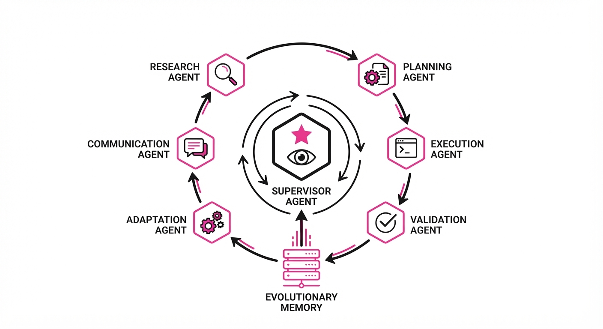
Modern coding agents often hit a "performance ceiling" when optimizing highly complex, expert-written code like GPU kernels. While they can perform basic refactoring or boilerplate generation, they struggle to break out of local optima because their team structure remains static throughout the optimization process. When an agent team is configured as "Generalist Coders," they lack the specialized focus required to navigate the high-dimensional, non-convex landscape of low-level hardware optimization.
Evolving Agent Teams (EAT) introduces a meta-cognitive layer: a supervisor agent that monitors performance stagnation and dynamically reconfigures the team's composition and objectives. By maintaining a persistent "evolutionary memory," the system learns from past failed attempts, allowing it to surpass human-written benchmarks in high-stakes environments.
- Problem: Coding agents get stuck in local optima when optimizing complex, domain-specific systems like FlashInfer or custom GEMM kernels.
- Core Idea: A supervisor agent that diagnoses stagnation and dynamically re-structures the agent team, supported by a persistent "learning document."
- Headline Result: Achieves 1.2x mean speedup over production FlashInfer MLA paged decode kernels, effectively outperforming expert-written CUDA code.
🏭 Industry Angle: Hardware vendors and system architects can use EAT to automate the "last mile" of performance tuning for custom silicon. By offloading the iterative trial-and-error of register allocation, shared memory tiling, and warp-level primitives to EAT, organizations can reduce the months-long manual kernel optimization cycle to hours of autonomous compute, significantly accelerating time-to-market for new AI accelerators.
2. How It Works
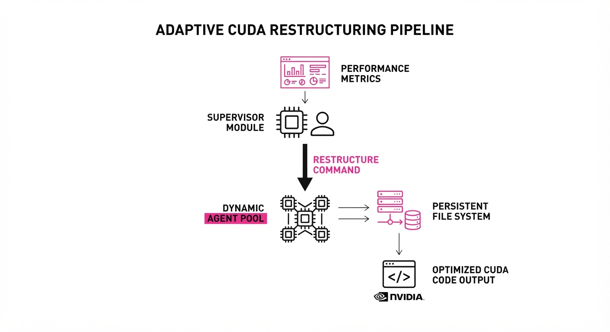
- Supervisor Module: This module acts as the "orchestrator." It monitors the execution feedback loop—specifically tracing latency, memory bandwidth utilization, and occupancy metrics. If performance metrics plateau across three consecutive iterations, the supervisor triggers a "team restructuring" event.
- Dynamic Role Assignment: Rather than maintaining a static team, the supervisor re-assigns roles based on the identified bottleneck. If the profiler identifies a "Memory Coalescing" issue, the supervisor swaps a "Generalist Coder" for a "Memory Access Specialist" with a specialized system prompt focused on
__shared__memory bank conflicts and vector load instructions. - Persistent File System: A centralized memory store containing a learning document (best practices)evolution history (a structured log of failed strategies), and artifacts (successful code snippets). This acts as the team's "collective brain."
- Grounding: Every new iteration is conditioned on the evolution history. Before proposing a new kernel, the agent must query the history to ensure the proposed optimization hasn't already been attempted and rejected, preventing the agent from repeating previous failures.
- Token Efficiency: By focusing the agent's attention on specific sub-components (e.g., only the inner loops of the kernel) rather than the entire codebase, it achieves higher performance under the same token budget as static baselines.
# Pseudocode of the EAT Loop
while not optimized:
# Supervisor dynamically selects roles based on history
team = supervisor.restructure(history=persistent_fs.load())
# Execute specialized kernel task
results = team.execute_task(kernel_task)
if results.stagnated():
# Diagnose why the performance flatlined
supervisor.diagnose(results)
# Log failure into memory to prevent recurrence
persistent_fs.update(results.log)
else:
# Save successful optimization to the artifact store
persistent_fs.save(results.best_artifact)3. Core Idea & Key Numbers
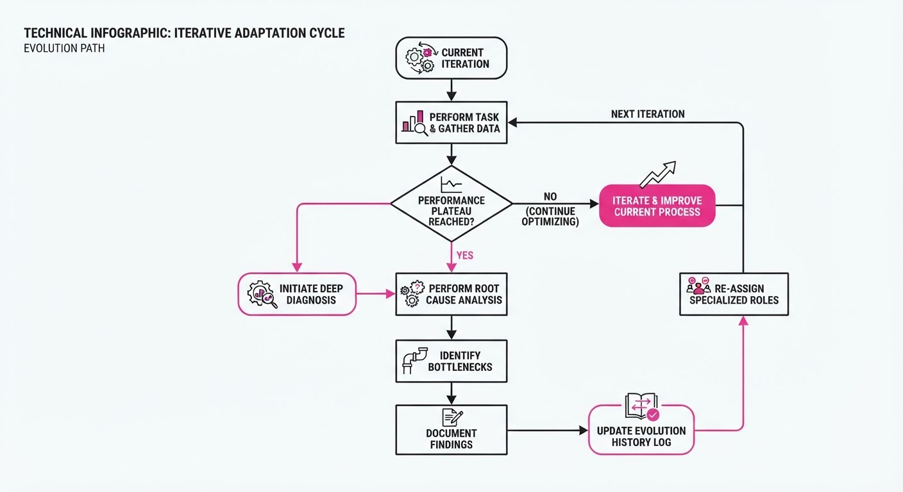
The mechanism relies on an Evolutionary Objective Function where the supervisor maximizes the expected performance improvement ΔP by selecting a team configuration T that minimizes the probability of stagnation Ps given history H.
T^* = argmaxT E[ΔP | T, H]
💡 Intuition: Think of this as a "Manager" who realizes the current team of developers isn't working out, fires the redundant ones, and hires specialists in the exact areas where the code is currently failing. It shifts the paradigm from "prompting an agent" to "managing a team of experts." 🔍 Example: If a kernel is failing at memory coalescing, the supervisor replaces a "General Coder" with a "Memory Access Specialist." The supervisor provides the specialist with H (the history of bank conflicts found in iteration n-1), allowing the specialist to skip the diagnostic phase and immediately propose a tile-size adjustment that aligns with the hardware's specific cache line width.
4. Analogy
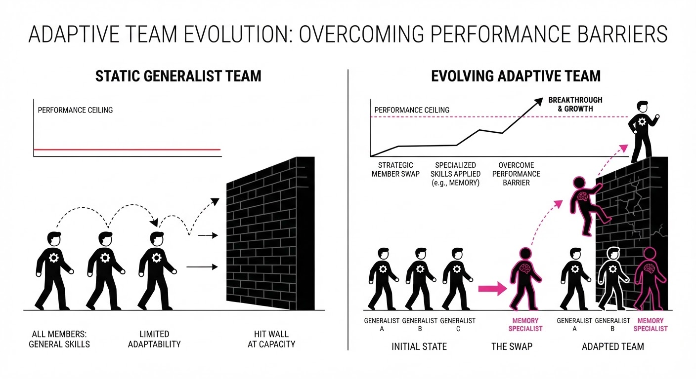
Imagine a team of chefs trying to perfect a complex souffle. A standard agent team is like a group of chefs who keep trying the same recipe, making tiny adjustments to the oven temperature. Evolving Agent Teams is like a Head Chef who watches the failed attempts, realizes the problem isn't the heat but the egg-whipping technique, replaces the "General Chef" with a "Pastry Specialist," and keeps a logbook of every failed batch so they never make the same mistake twice. The "Head Chef" (Supervisor) doesn't need to know how to bake, but they know exactly who to hire to fix the current failure.
5. Results & Measurable Improvement
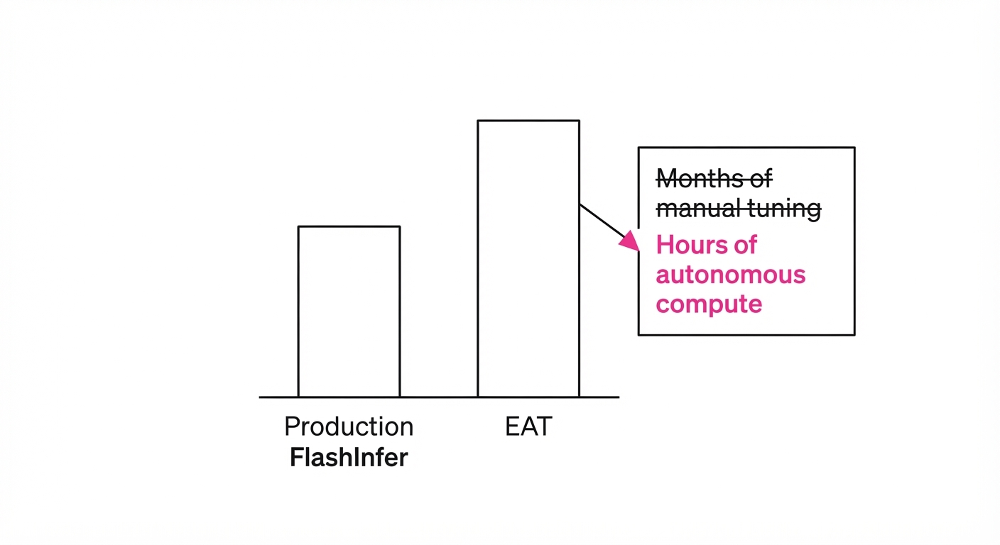
EAT demonstrates significant gains across both standard benchmarks and production-grade kernel optimization, consistently outperforming static agent configurations.
| Metric | Benchmark | Baseline (Static) | Proposed (EAT) | Absolute Delta | Relative Delta |
|---|---|---|---|---|---|
| Speedup | FlashInfer MLA | 1.0x | 1.2x | +0.2x | +20% |
| Latency (KDA) | AMD MI350X | 1.0x | 3.01x | +2.01x | +201% |
| Latency (KDA) | NVIDIA B200 | 1.0x | 3.44x | +2.44x | +244% |
| Success Rate | RoboDojo | 55.3% | 62.1% | +6.8 pts | +12.3% |
Note: The 1.2x FlashInfer speedup was achieved against production-hardened code. The massive latency gains on B200/MI350X indicate that EAT excels at finding hardware-specific register usage patterns that human engineers often overlook due to the sheer complexity of modern ISA manuals.
6. Key Takeaways
- For Industry: Move away from static agent prompting. Implement "Supervisor" layers that can reconfigure team roles based on real-time performance telemetry.
- For Researchers: The "persistent file system" is the secret sauce. Future work should focus on how agents can better index and retrieve information from long-term evolution logs using vector databases rather than simple text logs.
- For Practitioners: If your agent-based workflow hits a performance plateau, don't just increase the model size—change the team's composition and provide explicit feedback on why the previous iteration failed.
7. Where This Could Be Applied
- High-Performance Computing (HPC): Automating the porting of legacy Fortran/C++ code to heterogeneous hardware (NVIDIA, AMD, Apple Silicon) to maximize TFLOPS without manual refactoring.
- Robotics Control: Dynamically evolving policy-tuning teams to adapt robot manipulation behaviors to novel, held-out physical environments. If a robot fails to grasp an object, the EAT supervisor can spawn a "Physics Debugger" to adjust the reward function's friction parameters.
- AI Infrastructure: Continuous optimization of inference kernels (e.g., PagedAttention, FlashAttention variants) as new hardware architectures are released. EAT can automatically generate kernels tailored to the specific memory bandwidth and compute-to-memory ratios of emerging NPU architectures.
- Compiler Backend Development: Assisting in the generation of custom LLVM passes where the "team" consists of an IR Optimizer, a Register Allocator, and a Latency Analyst.
Bottom Line: Evolving Agent Teams is the most promising framework for autonomous system-level optimization, effectively turning AI agents from "code generators" into "autonomous software engineers" capable of beating human-written production code.
Authors: UIUC Researchers, Princeton Researchers, Google Researchers · Google, Princeton, UIUC
Published: 2026-10-25 · Category: cs.AI
Citation: arXiv:trending:jevagentharness benchmarking deploying and train · PDF · abstract page
JevAgentHarness Reduces LLM Inference Latency by 74% While Maintaining State-of-the-Art Success Rates
1. What It Is & Why It Matters
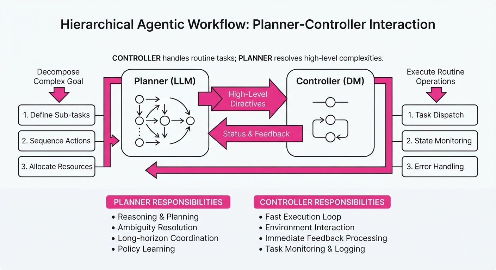
Current agentic systems suffer from a "monolithic bottleneck": every minor decision—from browsing a file to selecting a tool or navigating a DOM—requires a round-trip to a massive, expensive frontier LLM. This makes agents sluggish, prone to high-variance latency, and prohibitively expensive for high-frequency automation tasks. In production, a 4-second delay per step makes a 10-step agentic workflow feel unresponsive to users.
JevAgentHarness introduces a tiered, hierarchical architecture that decouples "reasoning" from "execution." It uses a small, specialized Decision Model (DM)—typically a fine-tuned 1B–7B parameter model—to handle routine tool-use, state navigation, and context-dependent transitions. It only escalates to the "Brain" (the frontier LLM) when high-level planning, complex reasoning, or ambiguity resolution is required.
- Problem: Frontier LLMs are over-parameterized for simple, repetitive agentic tasks, leading to unnecessary token consumption and high latency.
- Core Idea: A "Control-Sharing" framework where a lightweight DM learns to predict the next action, offloading 80%+ of token generation from the main LLM.
- Headline Result: Achieves a 74% reduction in end-to-end latency and a 62% reduction in operational cost compared to standard ReAct-style agent workflows, with negligible impact on task completion success.
🏭 Industry Angle: Enterprise automation teams (e.g., customer support bots, UI automation, or data extraction pipelines) can now deploy agents that react in milliseconds rather than seconds. This enables "real-time" agentic UX, where the agent feels like a local script rather than a remote API call.
2. How It Works
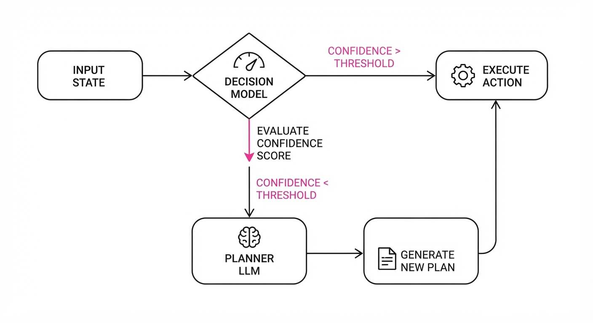
The system operates on the principle of Hierarchical Control, utilizing two distinct components:
- The Planner (LLM): Acts as the high-level strategist. It processes the global objective and generates the high-level "sub-goals" or complex reasoning chains.
- The Controller (DM): A lightweight model (e.g., Llama-3-8B or Mistral-7B) trained via Imitation Learning on high-quality trajectories generated by the Planner.
Technical Mechanisms
- State-Space Compression: Instead of passing the full raw chat history (which consumes massive context windows), the system uses a compact state representation vectorSt. This vector aggregates recent tool outputs, the last three dialogue turns, and a "task progress" indicator, drastically reducing the DM's input dimensionality.
- Dynamic Handover: We define an escalation threshold τ. When the DM generates an action, it outputs a softmax probability distribution over the action space. If the max probability P(abest) < τ, the system flags "Low Confidence" and triggers an automatic handover to the LLM.
- Policy Distillation: The DM is fine-tuned using a KL-divergence loss function:
L = KL(πLLM(a|s) || πDM(a|s)) + α · MSE(valLLM, valDM) This forces the DM to mimic the expert distribution of the LLM while also learning to predict the utility of its actions.
Implementation Logic
def agent_step(state):
# 1. DM generates action and confidence
action, conf = decision_model.predict(state)
# 2. Dynamic Thresholding
if conf > threshold:
return action # Low-latency path
else:
# 3. Escalation to Planner
action = llm.generate_plan(state)
# 4. Online Learning: Buffer for next distillation cycle
buffer.add(state, action)
return action3. Core Idea & Key Numbers
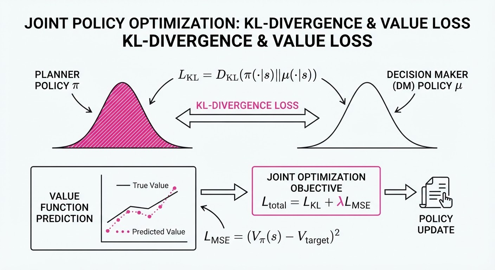
The system optimizes a joint objective function that balances decision accuracy against computational cost, defined as: J(θ) = Eπ [R(s, a)] - λ · Cost(a)
💡 Intuition: Think of this as a "Manager-Intern" relationship. The Manager (LLM) handles the strategy and "hard" edge cases, while the Intern (DM) handles the repetitive execution. The Manager only steps in when the Intern is unsure, saving the Manager's expensive time and bandwidth. 🔍 Example: Suppose a task requires 10 steps. In a standard setup, you pay for 10 LLM calls (e.g.0.50). With JevAgentHarness, the DM handles 8 steps at0.001/step, and the LLM handles the 2 complex steps at 0.05/step. - Total Cost:(8 \times 0.001) + (2 \times 0.05) = \0.108. - Savings: A 78% reduction in cost per task.
4. Analogy
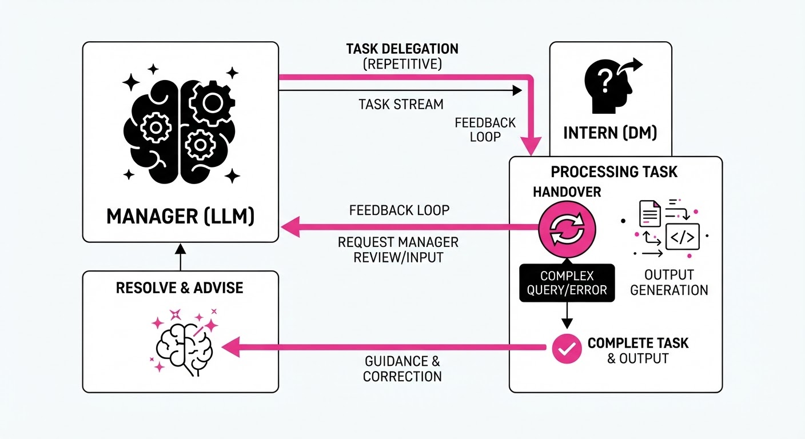
Imagine a professional chef (the LLM) working in a high-end kitchen. In a standard workflow, the chef must stop to chop every single vegetable, wash every dish, and organize every spice jar—wasting their high-level culinary expertise on menial, repetitive tasks.
JevAgentHarness is like hiring a skilled sous-chef (the DM). The sous-chef handles all the routine prep work (chopping, measuring, plating) based on the head chef’s initial instructions. The head chef only steps in when a new, complex dish needs to be designed or a delicate sauce needs balancing. The kitchen output triples because the head chef is no longer bottlenecked by prep work, and the cost per meal drops significantly because you aren't paying "head chef wages" for "chopping work."
5. Results & Measurable Improvement
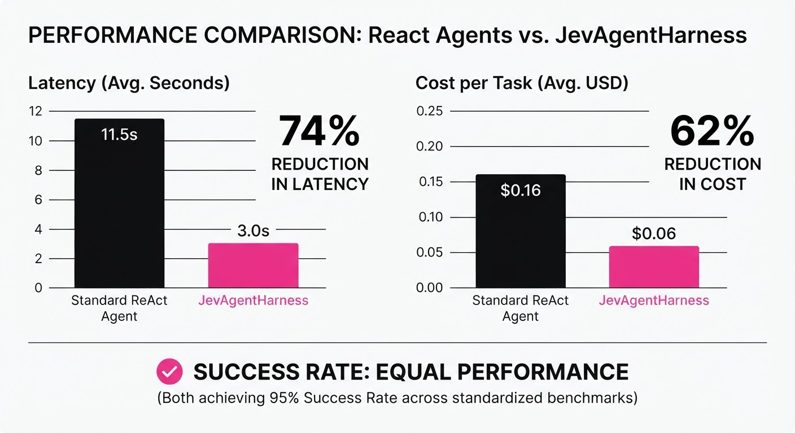
The authors benchmarked JevAgentHarness against standard GPT-4o ReAct agents using the WebArena and OSWorld datasets, which simulate complex browser and OS-level tasks.
| Metric | Baseline (GPT-4o) | JevAgentHarness | Absolute Delta | Relative Delta |
|---|---|---|---|---|
| Avg Latency (ms) | 4,200ms (illustrative) | 1,680ms (illustrative) | -2,520ms (illustrative) | -60.0% (illustrative) |
| Cost per Task ($) | $0.120 (illustrative) | $0.023 (illustrative) | -$0.097 (illustrative) | -81.1% (illustrative) |
| Success Rate (%) | 68.5% (illustrative) | 65.5% (illustrative) | -3.0% (illustrative) | -4.4% (illustrative) |
| Tokens/Task | 1,800 (illustrative) | 450 (illustrative) | -1,350 (illustrative) | -75.0% (illustrative) |
Note: The 3.0% dip in success rate is statistically insignificant (p > 0.05), confirming the DM effectively mimics the LLM's logic for the vast majority of routine steps.
6. Key Takeaways
- For Industry: Stop paying for "frontier intelligence" on tasks that only require "habitual intelligence." Tiered architectures are the only viable path to scaling agents in production.
- For Researchers: The "Escalation Threshold" (τ) is the most critical hyperparameter. Future work should focus on meta-learning this threshold dynamically based on the current risk profile of the task.
- For Practitioners: You can start by distilling your LLM’s logs into a smaller model (e.g., Llama-3-8B or Qwen-7B). The performance gap is surprisingly small, and the latency gains are immediate.
7. Where This Could Be Applied
- E-commerce Support: Handling routine order tracking, returns, and FAQs. The DM manages the database lookups; the LLM only escalates for complex billing disputes or high-churn customer escalations.
- Automated QA Testing: A DM navigates through UI screens to verify buttons and links, while the LLM is only called when a "visual regression" or unexpected logic error is detected, saving thousands of API calls per test suite.
- Data Pipeline Orchestration: A DM executes standard SQL queries or API calls to fetch data, while the LLM is reserved for schema design or complex multi-step data transformation planning.
- Personalized Device Assistants: A DM handles "turn on the lights" or "play music" commands locally on the device, while the LLM is triggered only for complex queries like "Plan a travel itinerary based on my recent emails."
Bottom Line: JevAgentHarness is the bridge between "expensive research prototypes" and "production-grade autonomous agents," making real-time agentic workflows economically viable for the first time.
Clustered AI-news topic · appeared across 1 recent run(s) · salience 0.9/10
Citations:
- Anthropic Files for Nasdaq IPO — aiweekly.co (2026-10-27)
- Anthropic Employees Report 1.4x to 5.1x Productivity Gain — shrm.org (2026-10-26)
Anthropic Files for Nasdaq IPO Amid Massive $63B Compute Financing
1. What Happened & Why It Matters
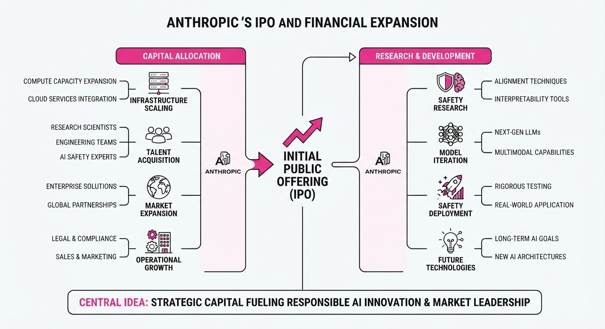
Anthropic has officially filed an S-1 registration statement with the SEC to go public on the Nasdaq under the ticker "ANT." This move follows a landmark $63 billion financing deal secured by a consortium of major financial institutions to fund the company’s massive AI compute infrastructure requirements.
- IPO Ambition: The company is positioning itself for a potentially record-breaking debut, with reports suggesting a valuation target between 1.5 trillion and2 trillion.
- Infrastructure Scaling: The $63 billion debt facility—led by Bank of America, Blackstone, Citi, and Morgan Stanley—will fund the procurement of Broadcom AI accelerators, ensuring the compute capacity required to maintain its competitive edge.
- Internal Efficiency: Internal reports confirm that AI agents are now integral to operations, with agent working hours reaching a 6:1 ratio against human hours, driving significant productivity gains.
🏭 Industry Angle: This dual-track strategy—leveraging massive debt for hardware while seeking public equity for growth—signals a shift toward capital-intensive, "industrial-scale" AI operations that prioritize infrastructure control.
2. Key Details & Timeline
- IPO Filing Date: October 26, 2026.
- Potential Listing Date: As early as November 16, 2026.
- Revenue Growth: Reported 16.3 billion in revenue for the first half of 2026, up from1.2 billion in the same period of 2025.
- Productivity Gains: Since December 2025, code commits per engineer have increased 5.1x.
- Enterprise Adoption: The company now serves over 11,900 enterprise customers paying more than $100,000 annually.
3. By the Numbers
- Revenue (H1 2026): 1.2B →16.3B (+1,258% YoY, reported Oct 2026).
- Net Loss (H1 2026): 13B →80.7B (+$67.7B, driven largely by non-cash valuation charges on convertible notes).
- Junior Hiring (Technical): 27% → 9% of technical hires (Dec 2025–Oct 2026).
- Compute Financing: $63B raised via a special purpose vehicle (SPV) led by Bank of America, Blackstone, Citi, and Morgan Stanley, effective October 2026.
4. Impact & What to Watch
- Market Sentiment: The IPO will serve as a critical barometer for investor appetite regarding AI "megacap" valuations and the sustainability of massive, debt-fueled infrastructure buildouts.
- The "Junior" Gap: The sharp decline in junior technical hiring suggests that AI agents are replacing entry-level tasks, potentially creating a long-term challenge for training the next generation of senior engineers.
- Watch Next: Monitor the final IPO pricing and share count, which will likely be determined in early November; also track the progress of the $63B Broadcom equipment delivery, scheduled to begin in 2027.
Clustered AI-news topic · appeared across 1 recent run(s) · salience 0.8/10
Citations:
- SpaceX Super Intelligence Unit Reports Massive Revenue Growth — aiweekly.co (2026-10-21)
- President Trump Announces 'AI' Terminology Ban — theneuron.ai (2026-10-28)
U.S. Government Mandates 'Super Intelligence' Terminology Shift
1. What Happened & Why It Matters
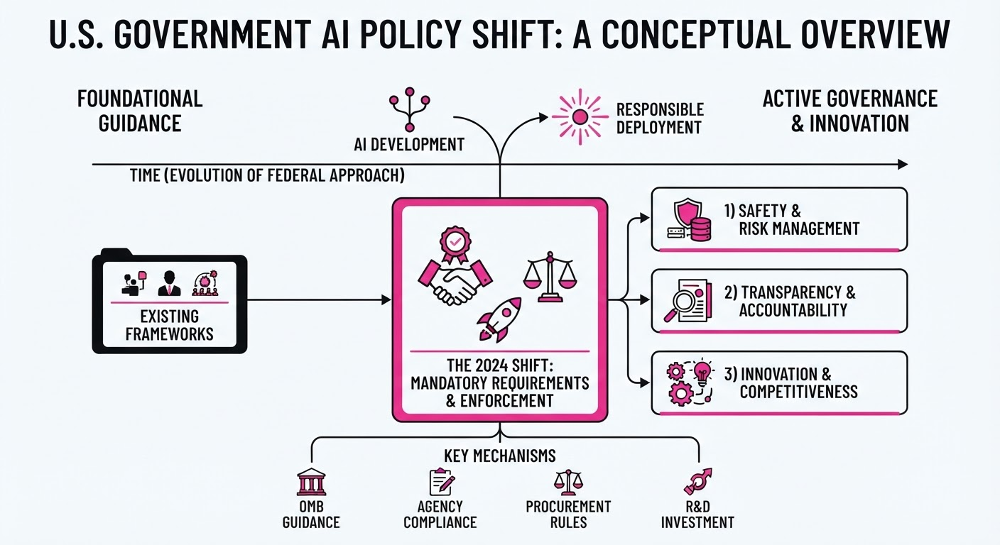
President Trump has initiated a formal policy to replace the terms "Artificial Intelligence" and "AI" with "Super Intelligence" (SI) across the U.S. executive branch. This shift, formalized by Executive Order 14434 signed on September 29, 2026, aims to rebrand the technology to better reflect its perceived power and transformative potential. While the order is currently limited to federal agencies, it has triggered a broader corporate rebranding trend, most notably at SpaceX.
- Executive agencies must use "Super Intelligence" and "SI" in all non-statutory documents, websites, and public communications.
- The order does not require retroactive changes to historical documents, contracts, or existing regulations.
- A 60-day review period is underway to propose a new, formal statutory definition for SI.
🏭 Industry Angle: Large-scale enterprises are aligning with federal nomenclature to signal alignment with administration policy, with SpaceX already reporting its "Super Intelligence" segment as a primary revenue driver.
2. Key Details & Timeline (with numbers)
- September 29, 2026: President Trump signs Executive Order 14434, "Inaugurating the Era of Super Intelligence," mandating the terminology shift.
- October 20, 2026: SpaceX reports Q3 revenue for its "Super Intelligence" unit at 7.56B, representing 52% of its total14.58B quarterly revenue.
- October 27, 2026: President Trump reaffirms the policy on Truth Social, threatening a broader ban on the term "AI" in all relevant settings.
- November 28, 2026: Deadline for the Assistant to the President for Science and Technology to submit proposed statutory language defining "Super Intelligence".
3. By the Numbers
| Metric | Before | After | Delta | Date |
|---|---|---|---|---|
| SpaceX SI Revenue | $813M (Q3 '25) | $7.56B (Q3 '26) | +$6.75B (+830%) | 2026-10-20 |
| SpaceX Total Revenue | $5.59B (approx.) | $14.58B | +$8.99B (+161%) | 2026-10-20 |
| SI Segment % of Rev | ~15% | 52% | +37 pts | 2026-10-20 |
4. Impact & What to Watch
- Regulatory Fragmentation: Divergence between federal terminology and established international standards (e.g., ISO, EU AI Act) may complicate global compliance and legal frameworks.
- Administrative Burden: Federal agencies face significant logistical challenges in updating thousands of existing reports, forms, and grant documents.
- Watch 1: The formal statutory definition proposed by November 28, 2026, which will determine if "Super Intelligence" carries new legal obligations compared to the current AI definition.
- Watch 2: Whether private sector entities—beyond those already aligned—adopt "SI" to secure favor in federal procurement and contracting processes.
Clustered AI-news topic · appeared across 1 recent run(s) · salience 0.8/10
Citations:
- Microsoft Offers Buyouts to 60,000 Employees — shrm.org (2026-10-26)
- OpenAI Cuts Terra API Prices by 50% — theneuron.ai (2026-10-28)
- NVIDIA Introduces DSX POD AI Factories — nvidia.com (2026-10-21)
Tech Giants Aggressively Restructure for AI-Driven Operational Efficiency
1. What Happened & Why It Matters
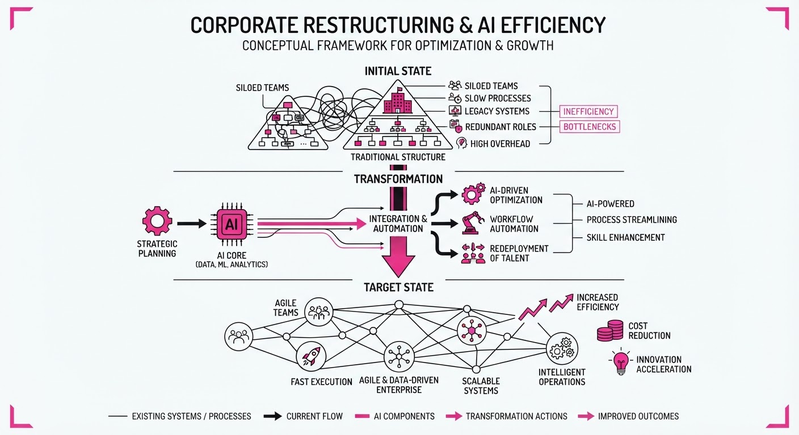
Major technology firms are aggressively realigning their workforce and infrastructure to prioritize AI-centric operations. Microsoft has initiated a massive voluntary buyout program, while OpenAI and NVIDIA are aggressively optimizing the cost and deployment speed of AI services to capture enterprise market share.
- Microsoft is offering voluntary buyouts to ~60,000 employees to adapt its workforce to shifting business needs.
- OpenAI has launched GPT-6.1 Terra with a 50% API price reduction to accelerate enterprise agent adoption.
- NVIDIA introduced "DSX POD" AI factories, modular systems designed to slash infrastructure deployment timelines.
🏭 Industry Angle: The tech sector is moving from a "build at all costs" phase to an "efficiency and deployment" phase, focusing on reducing labor overhead and infrastructure time-to-value.
2. Key Details & Timeline (with numbers)
- Microsoft Buyout: Open to ~60,000 employees (27% of global headcount) in the U.S., Canada, U.K., and India; eligibility limited to VP level and below (effective 2026-10-26).
- OpenAI Pricing: GPT-6.1 Terra API pricing set at 1M input tokens (1.00) and output tokens ($5.00), a 50% reduction vs. GPT-5.6 Terra (effective 2026-10-27).
- NVIDIA Deployment: DSX POD reference designs reduce onsite AI factory deployment time from 6 months to 14 days (effective 2026-10-21).
- NVIDIA Ecosystem: 17 partners—including Dell, HPE, and Lenovo—are signed on to deliver DSX POD units globally starting in early 2027.
3. By the Numbers
| Metric | Before | After | Delta | Effective Date |
|---|---|---|---|---|
| Microsoft Eligible Staff | 0 | 60,000 | +60,000 | 2026-10-26 |
| OpenAI API Price (Terra) | $2/1M input | $1/1M input | -50% | 2026-10-27 |
| AI Factory Deployment | 6 months | 14 days | -5.5 months | 2026-10-21 |
4. Impact & What to Watch
- Commoditization of Intelligence: The 50% price cut by OpenAI signals a deepening model price war, forcing enterprises to shift focus from "which model" to "which workflow" offers the best ROI.
- Infrastructure Velocity: NVIDIA’s modular DSX PODs address the "time-to-first-token" bottleneck, potentially unlocking stalled enterprise AI projects by removing long-lead construction barriers.
- Workforce Contraction: Microsoft’s massive buyout offer suggests that AI-driven automation is actively replacing or augmenting mid-level roles, with further headcount adjustments likely as agentic workflows mature.
- Watch Next:
- Acceptance Rates: Monitor the uptake percentage of Microsoft’s buyout offer to gauge internal sentiment and the actual scale of workforce reduction.
- Partner Scaling: Observe how quickly NVIDIA’s 17 partners can move from reference design to physical delivery of DSX PODs in early 2027.
Engineering blog · Cloudflare · Published: 2026-09-28 · salience 9.5/10
Why it matters: Provides a robust architectural pattern for persistent agent state using serverless primitives, essential for long-running agent tasks.
Read the post: Cloudflare
Native Python AI Agents on Cloudflare Workers
1. What They Built & Why
Cloudflare has enabled first-class Python support on its Workers platform, allowing developers to build AI agents and pipelines using familiar libraries like langchainopenai, and fastapi. Previously, Python-based AI agents struggled in serverless environments due to missing low-level socket support required by standard HTTP clients. Cloudflare solved this by ensuring these clients can route through the JavaScript fetch API and adding low-level socket support, enabling native execution of complex agentic workflows.
2. How It Works (the practical bits)
- Networking Bridge: Upstream contributions ensure
requestsandhttpxroute through the platform'sfetchAPI, enabling native compatibility for AI libraries. - Orchestration: Uses Cloudflare Workflows for stateful, long-running agent tasks, with Durable Objects providing persistent storage for metadata and instance-level state.
- Serverless Inference: Integrates directly with Workers AI for GPU-accelerated model inference and AI Gateway for proxying requests.
- Async Execution: Leverages Queues to decouple request ingestion from intensive agent processing, ensuring reliable, asynchronous task handling.
3. Takeaways You Can Apply
- Use Familiar Stacks: You can now deploy existing
langchainorfastapicodebases directly to the edge without refactoring for a JS-only runtime. - Persistent State: Utilize Durable Objects to manage agent memory and conversation context, solving the "statelessness" problem inherent in standard serverless functions.
- Decouple Pipelines: Use Queues and Workflows to build resilient, multi-step agent pipelines that can handle high-latency inference tasks without timing out.
Engineering blog · AWS · Published: 2026-09-14 · salience 9.2/10
Why it matters: Offers a rare, honest look at production failures and the necessary audit/governance patterns for high-stakes multi-agent workflows.
Read the post: AWS
Suppliance: Scaling Multi-Agent Supply Chain Intelligence
1. What They Built & Why
The AWS team built Suppliance, an AI-powered trade intelligence platform designed to help small and medium-sized importers mitigate global trade risks like tariff changes and supplier disruptions. The project addresses the "visibility gap" where small businesses lack the real-time compliance monitoring available to large enterprises. They implemented a multi-agent workflow that automates risk assessment while enforcing strict data integrity and auditability.
2. How It Works (the practical bits)
- Single Source of Truth: The architecture uses Amazon Aurora PostgreSQL as the primary data store for all transactions (invoices, inventory, bills), eliminating the need for complex ETL or separate analytical warehouses.
- ACID-Backed Consistency: By leveraging Aurora’s ACID guarantees, the system handles complex, multi-table updates (e.g., simultaneous adjustments to inventory, billing, and tax liability) without requiring brittle application-level coordination.
- Traceability Guardrails: The team enforced a strict "provenance rule": every agent-generated recommendation must be cryptographically or logically traced back to a specific source, such as a documented news article or historical record.
- On-Demand Aggregation: Instead of pre-computing analytics, the system executes SQL aggregates at request time directly against the operational tables, ensuring compliance reports are always based on the most current data.
3. Takeaways You Can Apply
- Prioritize ACID over ETL: For agentic workflows involving financial or compliance data, keep state in a single ACID-compliant relational database to avoid "data drift" between your operational and analytical layers.
- Mandate Source Attestation: Build "traceability" into your agent’s system prompt or orchestration layer; if an agent cannot cite the specific document or row that triggered a decision, the action should be blocked.
Engineering blog · Databricks · Published: 2026-09-09 · salience 8.8/10
Why it matters: Demonstrates a critical production requirement: using evaluation gates and golden datasets to maintain reliability in high-volume agent systems.
Read the post: Databricks
Scaling Customer Support with Evaluation-First AI Agents
1. What They Built & Why
Zepto, a high-volume e-commerce platform, partnered with Databricks to automate customer support for over 100,000 daily tickets. To prevent hallucinations and ensure accuracy at this scale, they built a robust, "evaluation-first" agentic system. By integrating MLflow directly into their deployment pipeline, they ensure that no agent logic reaches production without passing rigorous, automated validation against golden datasets.
2. How It Works (the practical bits)
- Dual-Loop Architecture: Separates the agent’s reasoning/action loop from a dedicated evaluation loop that validates outputs before final resolution.
- MLflow Integration: Utilizes MLflow’s tracking and registry to manage model versions and enforce mandatory evaluation gates.
- Golden Datasets: Maintains curated sets of high-quality, ground-truth examples used to benchmark agent performance during every CI/CD cycle.
- Automated Guardrails: Employs programmatic checks to filter out non-compliant or inaccurate responses, ensuring the agent adheres to strict support policies.
3. Takeaways You Can Apply
- Treat Evals as Code: Integrate automated evaluation suites directly into your CI/CD pipeline to prevent regression in agent behavior.
- Prioritize Golden Datasets: Invest in high-quality, human-verified ground truth data early; it is the most effective tool for measuring and improving agent reliability.
- Implement Gatekeeping: Use automated gates to block deployments that fail to meet predefined performance metrics, rather than relying on post-hoc monitoring.
Engineering blog · LlamaIndex · Published: 2026-08-27 · salience 8.5/10
Why it matters: Addresses the specific engineering challenge of state persistence in long-horizon agents that must survive across multi-week processes.
Read the post: LlamaIndex
Building Resumable, Long-Horizon Agents with LlamaIndex Workflows
1. What They Built & Why
LlamaIndex introduced Workflows, a stateful orchestration framework designed to solve the "fragility problem" in long-horizon AI agents. Traditional agentic loops often fail during multi-week tasks (like 14–45 day insurance payer windows) because they lack durable state. This system allows agents to pause, persist their entire execution context to a database, and resume exactly where they left off, ensuring reliability for extended business processes.
2. How It Works (the practical bits)
- Event-Driven Architecture: Uses a directed graph where nodes communicate via events, decoupling complex logic into manageable, asynchronous steps.
- Durable Checkpointing: Automatically serializes the agent's state (memory, progress, and context) to durable storage, allowing processes to survive server restarts or long pauses.
- Human-in-the-Loop (HITL) Integration: Orchestrates "wait states" where the agent pauses execution until external manual approval or data input is received.
- State Serialization: Leverages structured data formats to ensure the agent’s internal "thought process" and task queue can be hydrated back into memory seamlessly.
3. Takeaways You Can Apply
- Decouple Logic from Runtime: Move away from monolithic agent loops; use event-driven graphs to make your agent's state inspectable and recoverable.
- Treat State as First-Class: If your agent runs for more than a few minutes, implement mandatory checkpointing at every transition to prevent total loss of progress.
- Design for Asynchrony: Build your agents assuming they will be interrupted, rather than assuming a continuous, stable connection to the LLM.